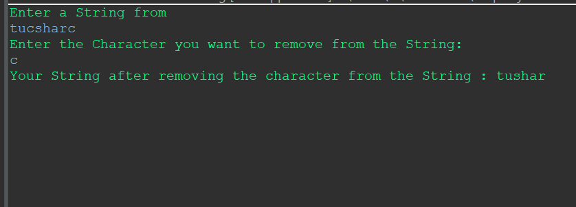
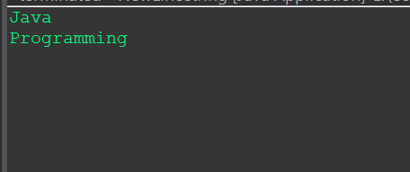
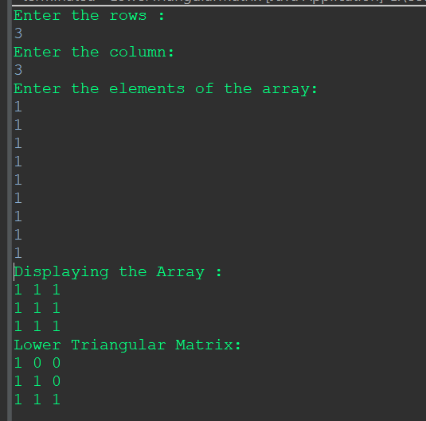
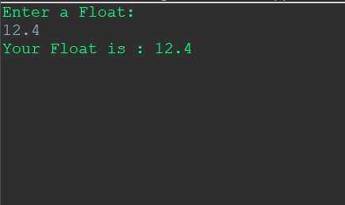
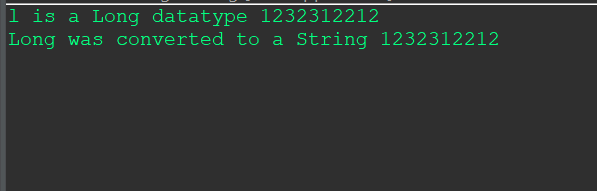
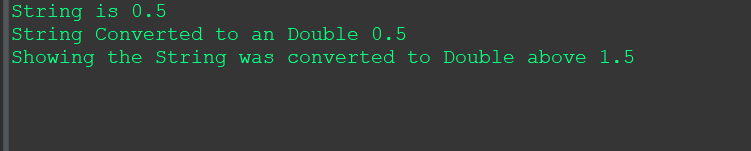
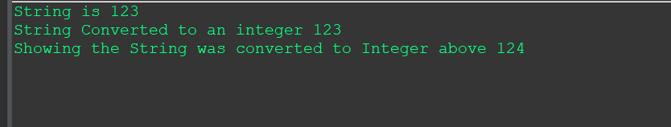
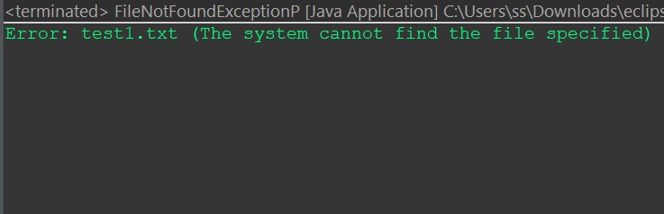
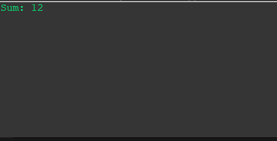

Programs that were allotted to me :-
- 1.String:
-
String is a class that represents a sequence of characters. It is one of the most commonly used classes in Java and is part of the java.lang package, so it is automatically imported into every Java program.
Program to remove all occurrences of a given character from input String:
package BCA5Practical;
import java.util.Scanner;
//Program to remove all occurrences of a given character from input String?
public class RemovecharacterString
{
public static void main(String[] args)
{
Scanner sc = new Scanner(System.in);
System.out.println("Enter a String from");
String input = sc.next();
System.out.println("Enter the Character you want to remove from the String:");
String c = sc.next();
String newInput = input.replace(c, "");
System.out.println("Your String after removing the character from the String : "+newInput);
}
}

2. Program to Print a New Line in String.
package BCA5Practical;
// Program to Print a New Line in String
public class NewLineString {
public static void main(String[] args)
{
System.out.println("Java" + '\n' + "Programming");
}
}

- 2.1D Array
-
In Java, a one-dimensional array is a collection of elements of the same data type arranged in a linear sequence. Arrays are used to store and manipulate collections of values. Here's an example of how you can declare, initialize, and use a one-dimensional array in Java:
Program to print the elements of an array
package BCA5Practical;
//Program to print the elements of an array
public class AllElements1DArray
{
public static void main(String[] args)
{
int arr[]= {11,12,14,15,16};
for(int i = 0;i< arr.length;i++)
{
System.out.println("Your elements in the Array are: "+arr[i]);
}
}
}

- 3.2-D Arrays:
In Java, a two-dimensional array is essentially an array of arrays. It is a grid of elements, where each element is identified by two indices: the row index and the column index.
Program to display the lower triangular matrix:
package BCA5Practical;
import java.util.Scanner;
//Program to display the lower triangular matrix
public class LowerTriangularMatrix
{
public static void main(String[] args)
{
Scanner sc = new Scanner(System.in);
int j,i;
System.out.println("Enter the rows : ");
int r = sc.nextInt();
System.out.println("Enter the column: ");
int c = sc.nextInt();
int arr[][]= new int[r][c];
System.out.println("Enter the elements of the array: ");
for(i = 0;i=j)
{
System.out.print(arr[i][j] +" ");
}
else
{
System.out.print("0"+" ");
}
}
System.out.println();
}
}
}

- 4.Input/Output:
-
To read input from the user, you can use the Scanner class.
For output, you can use the System.out.println method.
1.Enter the float from user using Scanner class.
package BCA5Practical;
import java.util.Scanner;
//Enter the float from user using Scanner class
public class FloatUsingScanner
{
public static void main(String[] args)
{
Scanner sc = new Scanner(System.in);
System.out.println("Enter a Float: ");
Double input = sc.nextDouble();
System.out.println("Your Float is : "+ input);
}
}

- 5. Data conversion:
In Java, data conversion involves converting a value from one data type to another. This process can be explicit (done by the programmer) or implicit (handled by the compiler).
-
1. How to convert long to String.
package BCA5Practical;
// How to convert long to String
public class LongToString
{
public static void main(String[] args)
{
long l = 1232312212;
String str = String.valueOf(l);
System.out.println("l is a Long datatype "+l);
System.out.println("Long was converted to a String "+str );
}
}

-
2. How to convert String to double.
package BCA5Practical;
//How to convert String to double
public class StringToDouble
{
public static void main(String[] args)
{
String str = "0.5";
double D=Double.parseDouble(str);
System.out.println("String is "+str);
System.out.println("String Converted to an Double "+ D);
System.out.println("Showing the String was converted to Double above "+(1+D));
}
}

-
3. How to convert String to int.
package BCA5Practical;
// How to convert String to int
public class StringToInt
{
public static void main(String[] args)
{
String str = "123";
int i=Integer.parseInt(str);
System.out.println("String is "+str);
System.out.println("String Converted to an integer "+ i);
System.out.println("Showing the String was converted to Integer above "+(1+i));
}
}

- 6. Exception Handling
Exception handling in Java is a mechanism that allows you to deal with runtime errors, also known as exceptions, in a controlled and structured way.
Exceptions are unexpected events that can occur during the execution of a program, such as division by zero, accessing an array out of bounds, or attempting to open a file that does not exist.
-
1. Write a Java program to create a method that reads a file and throws an exception if the file is not found
package BCA5Practical;
//Write a Java program to create a method that reads a file and
//throws an exception if the file is not found
import java.io.File;
import java.io.FileNotFoundException;
import java.util.Scanner;
public class FileNotFoundExceptionP
{
public static void main(String[] args)
{
try {
readFile("test1.txt");
} catch (FileNotFoundException e) {
System.out.println("Error: " + e.getMessage());
}
}
public static void readFile(String fileName) throws FileNotFoundException {
File file = new File(fileName);
Scanner scanner = new Scanner(file);
// Read and process the contents of the file
while (scanner.hasNextLine()) {
String line = scanner.nextLine();
System.out.println(line);
}
}
}

- 7.Basic Construct:
-
1. Adding two numbers without using the standard addition operator (+)
Adding two numbers without using the standard addition operator (+) in a programming language requires using other arithmetic or bitwise operations.
package BCA5Practical;
//Program 25 from basic construct
public class AddWithoutOperators {
public static int add(int a, int b) {
while (b != 0) {
int carry = a & b;
a = a ^ b;
b = carry << 1;
}
return a;
}
public static void main(String[] args) {
int num1 = 5;
int num2 = 7;
int sum = add(num1, num2);
System.out.println("Sum: " + sum);
}
}
